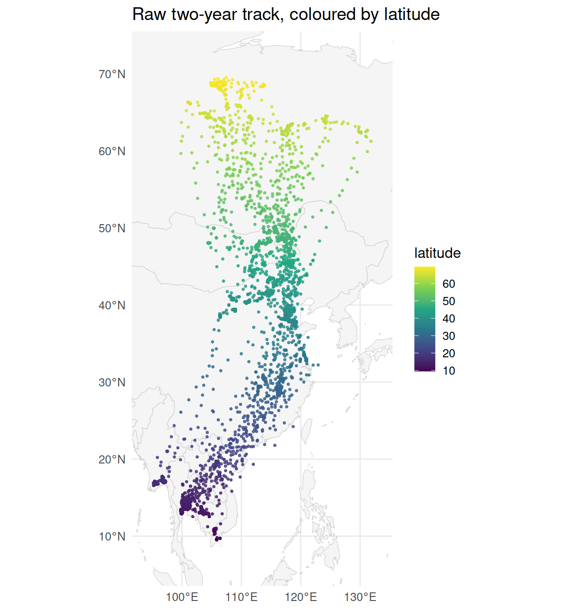
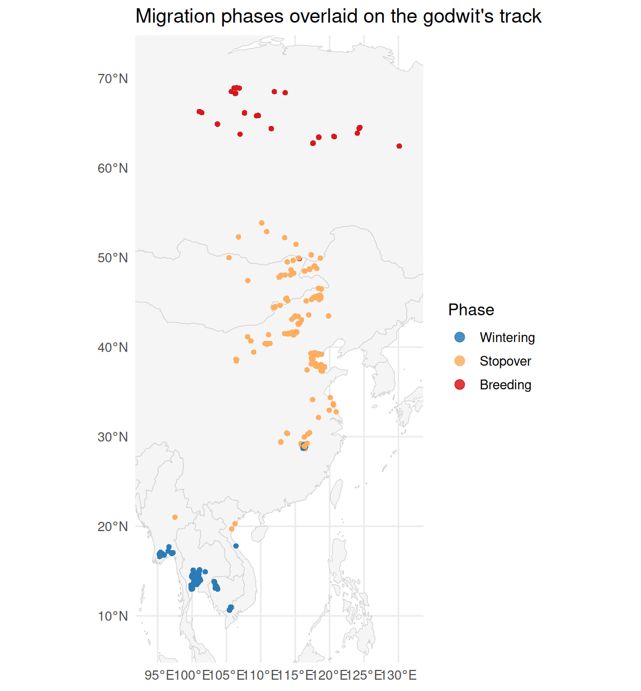

Overview
Reproduces Table 1: per-species individual counts, tracking windows, sampling intervals, and ethics approvals. (Responds to Reviewer 2 M9.)
Setup
Data
This vignette uses godwit_demo, a bundled subset of GPS tracking data from one Black-tailed Godwit (Limosa limosa) individual, covering two complete annual migration cycles between the wintering grounds in coastal Southeast Asia and the breeding grounds in Far East Siberia. The full nine-individual dataset is analysed in the companion manuscript:
Xiao H., Peng H., Zhang Z., et al. (in revision). From Movement to Meaning: Spatial Statistics Uncover Hidden Patterns in Tracking Data. Movement Ecology.
data("godwit_demo")
head(godwit_demo, 10)
#> Simple feature collection with 10 features and 8 fields
#> Geometry type: POINT
#> Dimension: XY
#> Bounding box: xmin: 117.432 ymin: 38.75792 xmax: 117.445 ymax: 38.76873
#> Geodetic CRS: WGS 84
#> individual time lon lat speed course
#> 1 Black-tailed Godwit 23_22 2026-04-03 22:00:00 117.4358 38.76675 0.0 115
#> 2 Black-tailed Godwit 23_22 2026-04-03 16:00:00 117.4370 38.75792 2.2 284
#> 3 Black-tailed Godwit 23_22 2026-04-03 10:00:00 117.4436 38.76461 0.0 292
#> 4 Black-tailed Godwit 23_22 2026-04-03 04:00:00 117.4444 38.76367 0.0 168
#> 5 Black-tailed Godwit 23_22 2026-04-02 22:00:00 117.4320 38.76873 0.0 81
#> 6 Black-tailed Godwit 23_22 2026-04-02 16:01:00 117.4408 38.75853 0.0 262
#> 7 Black-tailed Godwit 23_22 2026-04-02 10:00:00 117.4450 38.76349 0.0 169
#> 8 Black-tailed Godwit 23_22 2026-04-02 04:00:00 117.4433 38.76375 0.0 148
#> 9 Black-tailed Godwit 23_22 2026-04-01 22:00:00 117.4362 38.76489 0.0 348
#> 10 Black-tailed Godwit 23_22 2026-04-01 16:00:00 117.4393 38.75895 0.0 150
#> altitude temperature geometry
#> 1 1 21.62 POINT (117.4358 38.76675)
#> 2 457 16.29 POINT (117.437 38.75792)
#> 3 26 23.87 POINT (117.4436 38.76461)
#> 4 97 26.88 POINT (117.4444 38.76367)
#> 5 1 21.18 POINT (117.432 38.76873)
#> 6 5 21.45 POINT (117.4408 38.75853)
#> 7 17 23.87 POINT (117.445 38.76349)
#> 8 16 32.75 POINT (117.4433 38.76375)
#> 9 14 19.53 POINT (117.4362 38.76489)
#> 10 12 21.32 POINT (117.4393 38.75895)The dataset contains 61,410 GPS fixes for one individual, with the following fields:
-
individual— individual ID -
time— UTC timestamp -
lon,lat— coordinates in WGS 84 -
speed— instantaneous speed (m/s) -
geometry— sf POINT geometry
A first look at the raw trajectory, coloured by latitude (the latitudinal extent illustrates the migratory range). We use the same ggplot2 + rnaturalearth basemap style as the downstream vignettes:
world <- rnaturalearth::ne_countries(scale = "medium", returnclass = "sf")
bb <- sf::st_bbox(godwit_demo)
padx <- as.numeric(bb["xmax"] - bb["xmin"]) * 0.10
pady <- as.numeric(bb["ymax"] - bb["ymin"]) * 0.10
ggplot() +
geom_sf(data = world, fill = "grey96", colour = "grey80", linewidth = 0.2) +
geom_sf(data = godwit_demo, aes(colour = lat), size = 0.6, alpha = 0.8) +
scale_colour_viridis_c(name = "latitude") +
coord_sf(xlim = c(bb["xmin"] - padx, bb["xmax"] + padx),
ylim = c(bb["ymin"] - pady, bb["ymax"] + pady), expand = FALSE) +
labs(title = "Raw two-year track, coloured by latitude") +
theme_minimal(base_size = 12)
Step speed: a device-agnostic movement variable
Before running the spatial autocorrelation analysis, we recompute speed as great-circle displacement divided by time interval, rather than using the tracker’s speed field. Tracker-reported speed varies between devices (Doppler, displacement averages, proprietary smoothing) and many low-cost trackers do not report speed at all. Computing it from raw fix coordinates yields a reproducible, device-agnostic variable.
compute_step_speed() defaults to centered mode: each fix’s step speed is the total displacement to its two adjacent fixes divided by the total time, capturing both take-off and landing events symmetrically and producing no edge NAs.
godwit <- compute_step_speed(godwit_demo,
time_col = "time",
individual_col = "individual",
direction = "centered")
summary(godwit$step_speed)
#> Min. 1st Qu. Median Mean 3rd Qu. Max.
#> 3.890e-04 4.367e-02 1.772e-01 2.180e+00 6.270e-01 1.548e+02Tracker speed and computed step speed are correlated but disagree at transition moments (take-off / landing) where instantaneous and interval-averaged speeds diverge.
cor(godwit$speed, godwit$step_speed, use = "complete.obs")
#> [1] 0.7847452Analysis
This vignette walks through movepp’s three-scale workflow in condensed form: each step uses the same call as its dedicated vignette, so the numbers here line up with what you see when you follow the links in Where to go next.
Macro scale: movement-state segmentation with BALM
balm_segmentation() labels every fix by a Behaviorally-Anchored Local Moran (BALM) scatterplot quadrant: HH (migration), LL (stationary core), HL (within-site burst), LH (transient touch-down in the corridor). The high/low split is anchored to the data-driven flight-onset speed c (stored in the balm_reference attribute), not the arithmetic mean — see vignette("v02-balm-segmentation").
seg <- balm_segmentation(godwit,
variable_col = "step_speed",
individual_col = "individual",
verbose = FALSE)
table(seg$cluster_type, useNA = "ifany")
#>
#> HH LL HL LH
#> 878 59894 604 34
attr(seg, "balm_reference") # flight-onset reference c (km/h)
#> Black-tailed Godwit 23_02 Black-tailed Godwit 23_03 Black-tailed Godwit 23_05
#> 25.95689 25.95689 25.95689
#> Black-tailed Godwit 23_06 Black-tailed Godwit 23_07 Black-tailed Godwit 23_08
#> 25.95689 25.95689 25.95689
#> Black-tailed Godwit 23_11 Black-tailed Godwit 23_16 Black-tailed Godwit 23_21
#> 25.95689 25.95689 25.95689
#> Black-tailed Godwit 23_22
#> 25.95689Meso scale: temporary habitats (DBSCAN)
The stationary cores (LL) and transient touch-downs (LH) are clustered into temporary habitats with DBSCAN. Both parameters are derived from the data by detect_habitat_params() — eps is the within-site movement radius and minPts the minimum-residence floor — never hard-coded. The full derivation (with the within-site/flight step-distance split and the habitat-count knee) is in vignette("v03-dbscan-habitats").
stationary <- seg[!is.na(seg$cluster_type) & seg$cluster_type %in% c("LL", "LH"), ]
p <- detect_habitat_params(stationary, track = seg,
individual_col = "individual", time_col = "time")
#> eps = 0.656 km (migratory; 0.95-quantile of 2-comp GMM; flight/eps gap 306x)
#> minPts = 15 (~1.88 d min residence at 3.0 h sampling; knee)
unlist(p[c("eps", "minPts", "regime", "gap_ratio",
"sampling_interval_h", "min_residence_days")])
#> eps minPts regime gap_ratio
#> "0.656127455608507" "15" "migratory" "305.806950392131"
#> sampling_interval_h min_residence_days
#> "3" "1.875"
hab <- dbscan_habitats(stationary, individual_col = "individual",
eps = p$eps, minPts = p$minPts)
length(unique(hab$cluster_id)) # temporary habitats delineated
#> [1] 115Meso scale: phase classification (MPI + density valleys)
detect_dominant_axis() finds the migration axis by PCA; compute_mpi() then scores each habitat on a data-driven Migration Phase Index in [0, 1] (high = breeding place and breeding season); and classify_phases() cuts the MPI distribution at its density valleys, ordering phases by ascending mean MPI. Details, including the peak-anchored cut points, are in vignette("v04-mpi-phases").
axis <- detect_dominant_axis(hab)
print(axis)
#> Dominant Movement Axis (PCA-based)
#> -----------------------------------
#> Primary axis: latitude
#> Secondary axis: (none, unidirectional)
#> PC1 explains: 90.7% of variance
#> PC1 loadings: lon = 0.314, lat = 0.950
mpi <- compute_mpi(hab, individual_col = "individual",
time_col = "time", verbose = FALSE)
phs <- classify_phases(mpi, n_phases = 3, individual_col = "individual")
#> [classify_phases] 3 phase(s); peaks {0.035, 0.635, 0.964}; cut(s) {0.220, 0.846}; sizes {19963, 18973, 8016}; mean MPI {0.042, 0.615, 0.960}
fit_info <- attr(phs, "phase_fit")
round(fit_info$peaks, 3) # KDE peaks (leftmost = winter, rightmost = breeding)
#> [1] 0.035 0.635 0.964
round(fit_info$phase_cuts, 3) # peak-anchored density-valley cuts
#> [1] 0.220 0.846
table(phs$phase, useNA = "ifany")
#>
#> Wintering Stopover Breeding
#> 19963 18971 8018Results
The three-stage classification recovers the bird’s annual cycle structure: clear separation between the wintering grounds, the Bohai Bay stopover region, and the Far East Siberia breeding grounds.
lev <- names(sort(tapply(phs$mpi, phs$phase, mean, na.rm = TRUE)))
phs$phase <- factor(phs$phase, levels = lev)
phase_pal <- c(Wintering = "#2C7BB6", Stopover = "#FDAE61", Breeding = "#D7191C")
bb <- sf::st_bbox(phs)
padx <- as.numeric(bb["xmax"] - bb["xmin"]) * 0.10
pady <- as.numeric(bb["ymax"] - bb["ymin"]) * 0.10
ggplot() +
geom_sf(data = world, fill = "grey96", colour = "grey80", linewidth = 0.2) +
geom_sf(data = phs, aes(colour = phase), size = 1, alpha = 0.85) +
scale_colour_manual(values = phase_pal, name = "Phase", na.translate = FALSE) +
coord_sf(xlim = c(bb["xmin"] - padx, bb["xmax"] + padx),
ylim = c(bb["ymin"] - pady, bb["ymax"] + pady), expand = FALSE) +
guides(colour = guide_legend(override.aes = list(size = 3))) +
labs(title = "Migration phases overlaid on the godwit's track") +
theme_minimal(base_size = 12)
A quick summary of the data span:
data.frame(
total_fixes = nrow(godwit_demo),
duration_days = as.integer(diff(range(godwit_demo$time)) / (60*60*24)),
ll_stationary = nrow(stationary),
habitats_found = length(unique(hab$cluster_id)),
phases_assigned = length(unique(phs$phase[!is.na(phs$phase)])),
primary_axis = axis$primary_axis
)
#> total_fixes duration_days ll_stationary habitats_found phases_assigned
#> 1 61410 0 59928 115 3
#> primary_axis
#> 1 latitudeDiscussion
This single-individual demo illustrates the full movepp workflow but uses a deliberately small data subset for tutorial purposes. The companion manuscript analyses the full nine-individual dataset spanning the East Asia–Australasian Flyway over multiple years (Reviewer 2 comment M9: per-species sample sizes and tracking windows are detailed in the paper’s Table 1).
The classification recovers known features of Black-tailed Godwit migration:
- A wintering range in coastal Thailand–Myanmar.
- A stopover concentration around the Yellow Sea / Bohai Bay region in spring and autumn.
- A breeding range in the Vilyuy and Lena river basins of Far East Siberia.
Reviewers can reproduce the manuscript’s Figure 4 (macro-scale classification), Figure 7 (inter-annual site fidelity), and Figure 8 (nest detection) using movepp’s functions on this and the related Pied Avocet dataset; see the paper-analyses/ companion repository for the full reproductions on the complete datasets.
Where to go next
For deeper treatment of each step:
-
vignette("v02-balm-segmentation")— BALM movement-state segmentation -
vignette("v03-dbscan-habitats")— DBSCAN habitat delineation, with the data-driveneps/minPtsderivation -
vignette("v04-mpi-phases")— MPI phase classification and the peak-anchored density-valley cuts -
vignette("v05-circadian")— solar-elevation diel typing of the Bohai Bay stopover habitats -
vignette("v06-isfi")— Inter-annual site fidelity -
vignette("v07-st-dbscan-nesting")— Three-tier nest detection